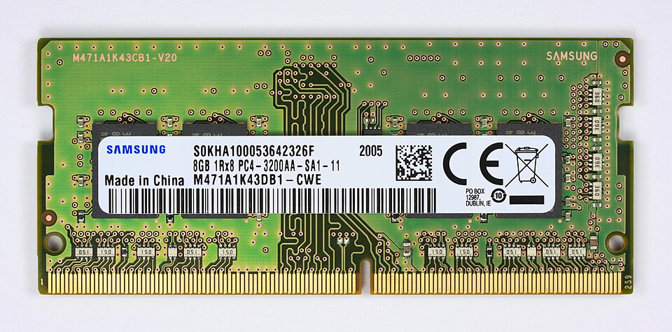
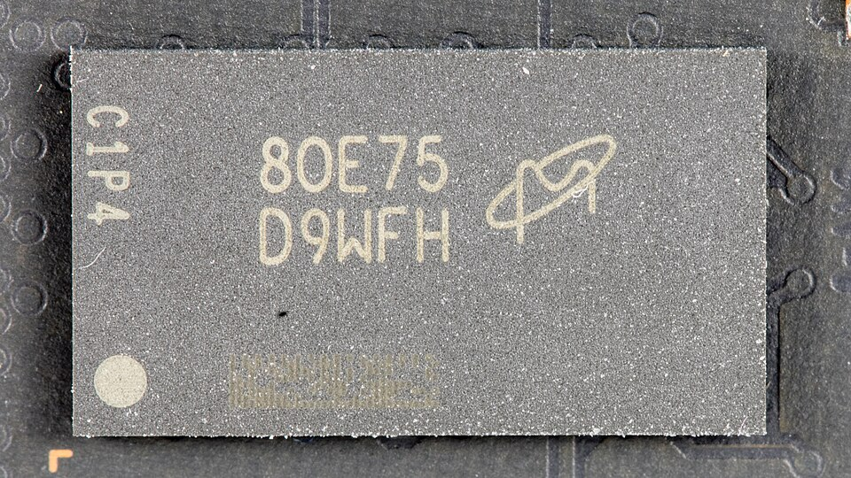

Inside laptop RAM: cells, chips, ranks and spare rows
Trace a DRAM cell and read a SO-DIMM label. Explain why removing a failed chip or limiting usable memory cannot normally restore a module.
Why a soldering iron cannot reach a bad bit
A common DRAM cell is a tiny capacitor and an access transistor formed on silicon. A wordline switches on a row of access transistors. A bitline carries the small charge change to a sense amplifier. The amplifier resolves the value and restores the charge. The memory subsystem periodically refreshes rows because their charge leaks over time. A static RAM cell usually uses several transistors to hold its state while powered. A flip-flop is another storage circuit used in logic. These are useful distinctions when deciding what a failed “bit” could mean. IBM’s account of the one-transistor DRAM cell · T15 digital storage and logic.

Photo by D-Kuru, scaled with on-page callouts. Original photo · CC BY-SA 4.0.


Photo by Raimond Spekking, scaled with on-page callouts. Original photo · CC BY-SA 4.0.

Watch. Locate the cell array, wordline and sense amplifier when the animation moves inside the memory chip. Branch Education’s computer memory walkthrough on YouTube.
Read 1Rx8 as a map of how the module answers
In a simplified non-ECC DDR4 example, a rank is a group of DRAM devices selected together to provide a 64-bit data width. Each x8 device supplies eight data lines. Eight such devices cover 64 lines. A module labelled 1Rx8 has one rank built from x8 DRAM. A second rank can use the same signal path and a different select. Rank count is a logical property. Counting sides with chips does not reliably identify it, especially with packages containing several dies. DDR5 client modules can divide their data path into independent subchannels. Use the actual module’s specification when identifying a donor. Kingston example of module organisation · Micron DDR5 device information.
The memory controller maps host addresses into channel, rank, bank, row and column. Interleaving can spread adjacent requests between channels or banks. It also trains timing at boot. A diagnostic shows the address and bits that differed. The hardware’s own mapping is needed to associate those results with a package or lane. A tool that decodes some systems still needs model support. PassMark’s supported decoding explanation.
Which ways of working around errors actually exist?
| Mechanism | Where it works | What it leaves out |
|---|---|---|
| Removing or swapping a whole module | A laptop can run with less memory if its documented population allows. An exact replacement can restore the supported configuration. | It helps only when the fault follows the removed module or its configuration. |
| DRAM spare row and post-package repair (PPR) | A supported chip and platform can substitute an internal spare row under the platform’s firmware and service procedure. Spare resources are limited. | A burned package, broken trace or bad socket needs another diagnosis. Laptop support and visibility vary. |
| Correcting errors with ECC | DDR5 on-die correction protects the array internally. System ECC uses a supported module, controller and platform to protect data across a broader path, according to the ECC scheme. | On-die ECC cannot protect the external memory bus. ECC does not make a board with reproducible errors a suitable donor. |
| Reserving a physical memory region | Some operating systems can reserve selected addresses so their allocator avoids them. | Firmware can still use memory before that policy takes effect. A fault may move, spread or affect a data lane across many addresses. Use of an address mask does not qualify the module for sale. |
Changing the total memory limit hides a range of host addresses. It cannot remove the need for the data lines served by a chip that participates in a working rank. Even a narrow repeatable fault calls for the documented platform approach or a verified replacement. Dell server example of PPR · Micron on ECC · PassMark on address reservation.
A 1Rx8 module shows multiple wrong bits with one byte lane involved. Can I remove that chip and keep 7 GiB?
Each chip supplies lanes to the same 64-bit rank. With one missing, the module loses part of its data width or fails training. A repeated lane clue points to the lane’s path, including its contact, supply, connected device and host channel. The result alone cannot prove the silicon failed. Use P91 to map the fault to a location and P92 to decide whether to repair the module.